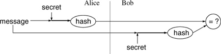

Networking Security Networking Security Networking Security Security Networking Security Networking Security Networking Charlie Kaufman Radia Perlman Mike Speciner Prentice Hall Network Security: Private Communication in a Public World, Second Edition
2.6. Hash Algorithms
Hash algorithms are also known as message digests or one-way transformations.
A cryptographic hash function is a mathematical transformation that takes a message of arbitrary length (transformed into a string of bits) and computes from it a fixed-length (short) number.
We'll call the hash of a message m, h(m). It has the following properties:
For any message m, it is relatively easy to compute h(m). This just means that in order to be practical it can't take a lot of processing time to compute the hash. Given h(m), there is no way to find an m that hashes to h(m) in a way that is substantially easier than going through all possible values of m and computing h(m) for each one. Even though it's obvious that many different values of m will be transformed to the same value h(m) (because there are many more possible values of m), it is computationally infeasible to find two values that hash to the same thing.
An example of the sort of function that might work is taking the message m, treating it as a number, adding some large constant, squaring it, and taking the middle n digits as the hash. You can see that while this would not be difficult to compute, it's not obvious how you could find a message that would produce a particular hash, or how one might find two messages with the same hash. It turns out this is not a particularly good message digest functionÂwe'll give examples of secure message digest functions in Chapter 5 Hashes and Message Digests. But the basic idea of a message digest function is that the input is mangled so badly the process cannot be reversed.
2.6.1. Password Hashing
When a user types a password, the system has to be able to determine whether the user got it right. If the system stores the passwords unencrypted, then anyone with access to the system storage or backup tapes can steal the passwords. Luckily, it is not necessary for the system to know a password in order to verify its correctness. (A proper password is like pornography. You can't tell what it is, but you know it when you see it.)
Instead of storing the password, the system can store a hash of the password. When a password is supplied, it computes the password's hash and compares it with the stored value. If they match, the password is deemed correct. If the hashed password file is obtained by an attacker, it is not immediately useful because the passwords can't be derived from the hashes. Historically, some systems made the password file publicly readable, an expression of confidence in the security of the hash. Even if there are no cryptographic flaws in the hash, it is possible to guess passwords and hash them to see if they match. If a user is careless and chooses a password that is guessable (say, a word that would appear in a 50000-word dictionary or book of common names), an exhaustive search would "crack" the password even if the encryption were sound. For this reason, many systems hide the hashed password list (and those that don't should).
2.6.2. Message Integrity
Cryptographic hash functions can be used to generate a MAC to protect the integrity of messages transmitted over insecure media in much the same way as secret key cryptography.
If we merely sent the message and used the hash of the message as a MAC, this would not be secure, since the hash function is well-known. The bad guy can modify the message and compute a new hash for the new message, and transmit that.
However, if Alice and Bob have agreed on a secret, Alice can use a hash to generate a MAC for a message to Bob by taking the message, concatenating the secret, and computing the hash of message|secret. This is called a keyed hash. Alice then sends the hash and the message (without the secret) to Bob. Bob concatenates the secret to the received message and computes the hash of the result. If that matches the received hash, Bob can have confidence the message was sent by someone knowing the secret. [Note: there are some cryptographic subtleties to making this actually secure; see §5.2.2 Computing a MAC with a Hash].

2.6.3. Message Fingerprint
If you want to know whether some large data structure (e.g. a program) has been modified from one day to the next, you could keep a copy of the data on some tamper-proof backing store and periodically compare it to the active version. With a hash function, you can save storage: you simply save the message digest of the data on the tamper-proof backing store (which because the hash is small could be a piece of paper in a filing cabinet). If the message digest hasn't changed, you can be confident none of the data has.
A note to would-be usersÂif it hasn't already occurred to you, it has occurred to the bad guysÂthe program that computes the hash must also be independently protected for this to be secure. Otherwise the bad guys can change the file but also change the hashing program to report the checksum as though the file were unchanged!
2.6.4. Downline Load Security
It is common practice to have special-purpose devices connected to a network, like routers or printers, that do not have the nonvolatile memory to store the programs they normally run. Instead, they keep a bootstrap program smart enough to get a program from the network and run it. This scheme is called downline load.
Suppose you want to downline load a program and make sure it hasn't been corrupted (whether intentionally or not). If you know the proper hash of the program, you can compute the hash of the loaded program and make sure it has the proper value before running the program.
2.6.5. Digital Signature Efficiency
The best-known public key algorithms are sufficiently processor-intensive that it is desirable to compute a message digest of the message and sign that, rather than to sign the message directly. The message digest algorithms are much less processor-intensive, and the message digest is much shorter than the message.
|